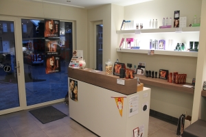
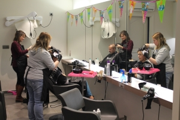

Het Kapsalon
Het Kapsalon
4 jaar geleden, in 2012, werd Kapsalon Natur'elle opgericht door Liesbeth Hellinckx. Op korte tijd groeide het kapsalon uit tot het meest populaire kapsalon in Peizegem.
Door zich te richten op een algemeen publiek - mannen en vrouwen, volwassenen en kinderen - wist Liesbeth in geen tijd veel trouwe klanten aan te trekken die maar al te graag blijven terugkomen. De vraag naar een afspraak in het kapsalon werd zelfs zo groot dat er ondertussen een tweede kapster tewerk gesteld is: Lieselotte
Het kapsalon straalt een zeer gezellige sfeer uit door de rustige omgeving en een stijlvolle inrichting.
De Kapster
Na een opleiding haarzorg aan het Sint-Maarteninstituut te Aalst ging Liesbeth aan de slag als kapper aan huis. Een jaar later besloot ze echter een huis te kopen in Peizegem en zo werd Kapsalon Natur'Elle geboren.
Voor Liesbeth is de klant koning en is de stiptheid van afspraken zeker belangrijk. Afspraken die uitlopen en hierdoor de volgende mensen vertraging laten oplopen zijn haast onbestaande. Natuurlijk zijn Liesbeth en Lieselotte altijd te vinden voor een vriendelijke babbel. Het kapsalon bezoeken is altijd een beetje thuiskomen.